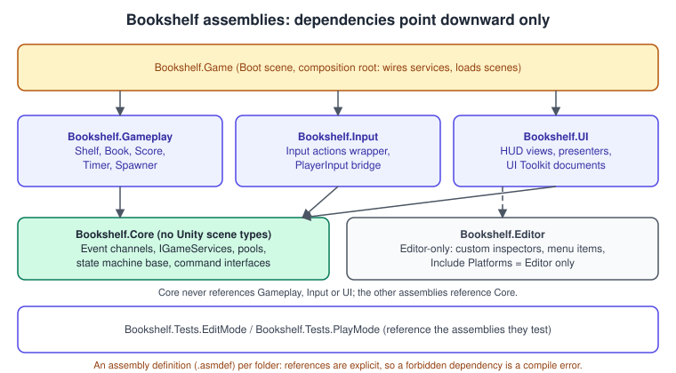
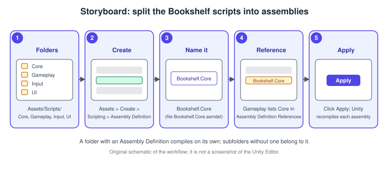
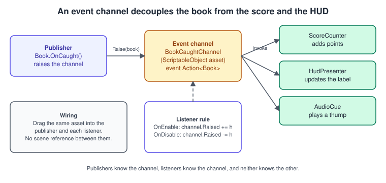
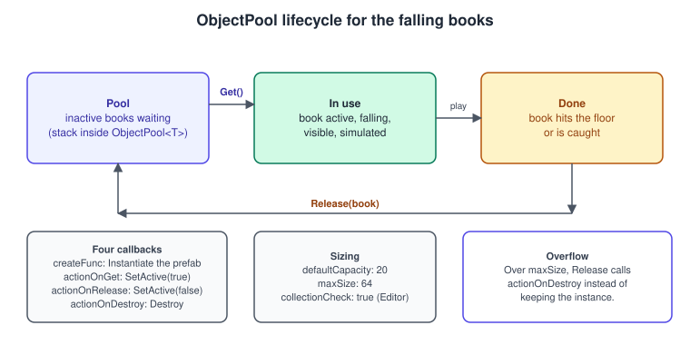
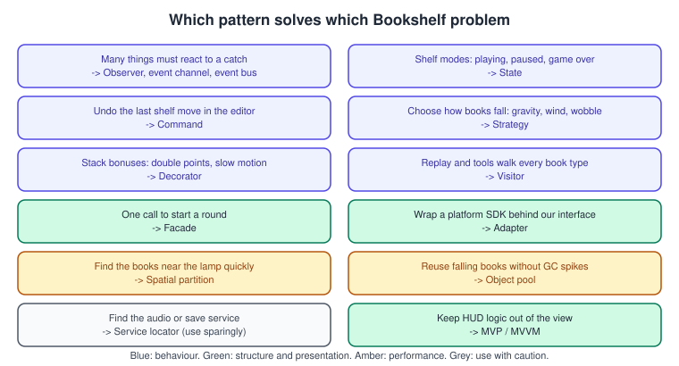

Project Architecture and Design Patterns
|
This content was generated with the assistance of AI and should be verified against the official documentation before being relied on in production. |
A Unity project that works at 200 lines rarely works at 20,000 unless it has a shape. The shape is not decoration: it decides how long a compile takes, whether a designer can change a rule without touching a prefab, whether a test can run without a scene, and whether the second person on the team can find anything. This page describes the shape of the Bookshelf project and the design patterns that give it that shape, one pattern at a time: what problem it solves, how it looks in Unity code, what it costs, and what Unity itself provides so that you do not have to write it.
The facts were checked in November 2026. The page documents Unity 6.3 LTS (6000.3, supported until December 2027) and mentions Unity 6.6 where behaviour changed: the most important change for this page is that new projects created in Unity 6.6 enter Play mode with domain reload turned off, which silently breaks every static field that assumed a fresh start. The code is C# 9 (Unity 6 ships a C# 9 compiler profile), uses the Input System package only where an example needs input, and runs on every platform Unity supports; nothing on this page depends on the render pipeline. The running example is the Bookshelf, step 9, the small game "catch the falling books": books fall from the ceiling, the player moves a librarian under them, a score and a timer run, and the same book model was imported from bookshelf.glb. The general theory of the loop these patterns plug into is in Game Loop and Frame Timing, the data-oriented alternative to inheritance-heavy design is in Entity Component System, and the language features used here (delegates, events, generics, interfaces) are explained in Delegates, Lambdas and Events, Generics and Interfaces.
The pattern names come from the object-oriented design literature; Unity publishes its own Unity 6 e-book on the subject, "Level up your code with design patterns and SOLID", and two books on the bibliography teach many of the same patterns with older Unity versions. The section "Where the books are outdated" at the end lists exactly what changed.
How the Bookshelf is organised

Every pattern below is easier to apply when the project has a few rules about who may know whom:
-
Core holds code with no scene dependencies: interfaces, event channels, the pool wrapper, the state machine base class, the command history. It compiles without any gameplay type and can be unit-tested in Edit Mode.
-
Gameplay, Input and UI reference Core and never each other. Gameplay raises events; UI listens; Input translates actions into calls on a small interface.
-
Game is the composition root: the one assembly allowed to know everything. It lives in the Boot scene, creates the services and hands them to whoever needs them.
-
Editor code (custom inspectors, menu items) is in its own assembly restricted to the Editor platform, so it never ends up in a player build.
The rule "references point downward" is not a convention to remember; an assembly definition turns it into a compile error.
Assembly definitions
By default, every script in Assets that is not in an Editor folder compiles into one assembly, Assembly-CSharp. Change one script and the whole assembly recompiles; reference
anything from anywhere; no boundary exists. An assembly definition (an .asmdef asset) placed in a folder makes that folder (and its subfolders without their own definition) a separate assembly with
an explicit list of references. Benefits:
-
only the changed assembly and the assemblies that depend on it recompile, so iteration time stays low as the project grows;
-
a dependency you did not declare does not compile, which is how the layering above is enforced;
-
a test assembly can reference exactly the assemblies it tests;
-
platform and define constraints can include or exclude a whole assembly (for example, Editor only).
To split the Bookshelf (the procedure repeats for each folder):
-
In the Project window, select the folder (for example
Assets/Scripts/Core). -
Choose Assets > Create > Scripting > Assembly Definition and name the asset
Bookshelf.Core. -
Repeat for
Gameplay,Input,UI,GameandEditor. -
Select
Bookshelf.Gameplay.asmdef. In the Inspector, under Assembly Definition References, addBookshelf.Core, then click Apply. Unity recompiles. -
In
Bookshelf.Editor.asmdef, clear Any Platform and tick only Editor under Include Platforms. -
Add
Unity.InputSystemto the references ofBookshelf.Input. A package assembly that is not referenced is invisible to your code.

The file the Inspector edits is plain JSON. This is the whole of Bookshelf.Gameplay.asmdef; the other files differ only in name and references:
{
"name": "Bookshelf.Gameplay",
"rootNamespace": "Bookshelf.Gameplay",
"references": [
"Bookshelf.Core",
"Unity.InputSystem"
],
"includePlatforms": [],
"excludePlatforms": [],
"allowUnsafeCode": false,
"overrideReferences": false,
"precompiledReferences": [],
"autoReferenced": false,
"defineConstraints": [],
"versionDefines": [],
"noEngineReferences": false
}autoReferenced: false keeps the new assembly out of the predefined Assembly-CSharp assembly’s references, which preserves the layering. Setting noEngineReferences to true in Bookshelf.Core
is a stricter variant: Core then cannot use any UnityEngine type at all, which makes it testable outside Unity, at the price of moving every MonoBehaviour out of it.
A reference loop (A references B references A) is rejected by the compiler; resolving it is usually a sign that an interface belongs in the lower assembly.
Pitfalls of assemblies
-
A script in a folder with its own
.asmdefis not inAssembly-CSharp; a script that was working through the global assembly suddenly cannot see the type it used. The fix is a reference, not a move. -
Do not create an assembly for every folder. Five to ten assemblies with clear responsibilities beat fifty with tangled references.
-
An
.asmdeffile name and itsnameproperty are independent: renaming the file does not rename the assembly. Keep them equal. -
Types used by a serialized asset (a
ScriptableObject, a prefab) are found by assembly name and class; moving a script between assemblies without moving its.metafile breaks the reference.
The Singleton and its cost
The Singleton ensures a class has one instance and gives global access to it. In Unity it is almost always a MonoBehaviour kept alive across scene loads, and it is the first pattern
most tutorials teach because it is the shortest way to let anything call the audio, the score or the save system:
using UnityEngine;
namespace Bookshelf.Gameplay
{
/// <summary>A minimal MonoBehaviour singleton for the audio service.</summary>
[DisallowMultipleComponent]
public sealed class AudioService : MonoBehaviour
{
public static AudioService Instance { get; private set; }
[SerializeField] private AudioSource _source;
// Runs before the first scene loads, and again on every Play mode entry,
// even when domain reload is disabled (the default for new projects since Unity 6.6).
[RuntimeInitializeOnLoadMethod(RuntimeInitializeLoadType.SubsystemRegistration)]
private static void ResetStatics()
{
Instance = null;
}
private void Awake()
{
if (Instance != null && Instance != this)
{
Destroy(gameObject);
return;
}
Instance = this;
DontDestroyOnLoad(gameObject);
}
private void OnDestroy()
{
if (Instance == this)
{
Instance = null;
}
}
public void Play(AudioClip clip, float volume = 1f)
{
_source.PlayOneShot(clip, volume);
}
}
}The costs are real, and they are the reason the pattern has a bad reputation:
-
Hidden dependencies. A class that calls
AudioService.Instancedoes not declare that it needs audio. Its constructor, fields and Inspector tell you nothing. -
Hard to test. A test that creates a
Bookmust also create (or tolerate the absence of) anAudioService. -
Order of initialisation.
Instanceis null until the singleton’sAwakehas run; another script’sAwakemay run first, and the order between scripts is not defined unless you configure it. -
Lifetime.
DontDestroyOnLoadkeeps the object forever. Entering the Boot scene a second time creates a duplicate that the guard above has to destroy. -
Static state and Play mode. A static field survives as long as the domain does. With Reload Domain turned off when entering Play mode, the field keeps the object from the previous Play session, which is now destroyed: the next access finds a "fake null" object. This is the most common Unity 6.6 migration bug, explained next.
Static state and the domain reload rule
When you press Play in the Editor, Unity can reload the domain: unload and reload all compiled assemblies, which resets every static field to its initial value. That is slow (seconds
in a large project), so the Enter Play Mode Settings let you turn it off. Unity 6.6 made Reload Scene only the default for new projects and recommends keeping domain reload off, because the mechanism is
planned to go away in a future Unity version. The consequence: a static field, a static event, a static readonly list that your code mutates, and any singleton Instance keep their values from the previous
run unless you reset them yourself. A built player never reloads a domain, so this affects the Editor only, but a bug that appears only after the second Play press is exactly the kind that wastes a day.
The reset belongs in a [RuntimeInitializeOnLoadMethod(RuntimeInitializeLoadType.SubsystemRegistration)] static method, as in ResetStatics above. SubsystemRegistration is the earliest
callback, called when starting up the runtime and before the first scene is loaded. Static events need the same treatment:
using System;
using UnityEngine;
namespace Bookshelf.Core
{
public static class GameEvents
{
public static event Action RoundStarted;
public static event Action<int> ScoreChanged;
[RuntimeInitializeOnLoadMethod(RuntimeInitializeLoadType.SubsystemRegistration)]
private static void ResetStatics()
{
// Setting an event field to null from inside its declaring class removes all subscribers.
RoundStarted = null;
ScoreChanged = null;
}
public static void RaiseRoundStarted() => RoundStarted?.Invoke();
public static void RaiseScoreChanged(int score) => ScoreChanged?.Invoke(score);
}
}Project Auditor, according to the Unity 6.6 release notes, now includes a Roslyn analyzer that reports static fields that may need resetting (UAL warnings), and an AutoStaticsCleanup attribute.
Source: Unity Manual: New in Unity 6.6.
Finding objects: the renamed lookup methods
Singletons are often replaced, in beginners' code, by FindObjectOfType<T>(). That method is obsolete; Unity 6 provides Object.FindFirstObjectByType (the first match, deterministic but slower) and
Object.FindAnyObjectByType (any match, faster, order not guaranteed). Both still scan the scene: call them once in Awake or Start and store the result, never in Update.
using UnityEngine;
public sealed class HudBootstrap : MonoBehaviour
{
private Camera _main;
private ScoreCounter _score;
private void Awake()
{
_main = Camera.main;
// FindAnyObjectByType is faster than FindFirstObjectByType when only one instance exists.
_score = FindAnyObjectByType<ScoreCounter>();
}
}When a singleton is acceptable: a tiny project, a prototype, a truly process-wide resource such as a logger. When it is not: anything you want to test, swap or run twice (two players, two scenes in an editor preview). The next patterns remove the global reference without removing the sharing.
Service Locator
A Service Locator is a registry mapping an interface to an implementation. Callers ask for the interface, not for a concrete class, so the implementation can change (a real audio service in the game, a silent one in a test). It is still global state, but one global instead of one per service, and the dependency is on an interface:
using System;
using System.Collections.Generic;
using UnityEngine;
namespace Bookshelf.Core
{
public interface IScoreService
{
int Current { get; }
void Add(int points);
}
public interface IClock
{
float Now { get; }
}
/// <summary>A static registry from service interface to instance.</summary>
public static class Services
{
private static readonly Dictionary<Type, object> Map = new Dictionary<Type, object>();
[RuntimeInitializeOnLoadMethod(RuntimeInitializeLoadType.SubsystemRegistration)]
private static void ResetStatics() => Map.Clear();
public static void Register<T>(T service) where T : class
{
Map[typeof(T)] = service ?? throw new ArgumentNullException(nameof(service));
}
public static T Get<T>() where T : class
{
if (Map.TryGetValue(typeof(T), out var service))
{
return (T)service;
}
throw new InvalidOperationException(
$"No service registered for {typeof(T).Name}. Register it in the Boot scene.");
}
public static bool TryGet<T>(out T service) where T : class
{
if (Map.TryGetValue(typeof(T), out var found))
{
service = (T)found;
return true;
}
service = null;
return false;
}
public static void Clear() => Map.Clear();
}
public sealed class ScoreService : IScoreService
{
public int Current { get; private set; }
public void Add(int points) => Current += points;
}
public sealed class UnityClock : IClock
{
public float Now => Time.time;
}
}The composition root registers the services once, in the Boot scene, before any gameplay script runs. DefaultExecutionOrder with a negative value makes it run first:
using Bookshelf.Core;
using UnityEngine;
namespace Bookshelf.Game
{
[DefaultExecutionOrder(-1000)]
public sealed class Bootstrap : MonoBehaviour
{
private void Awake()
{
Services.Register<IScoreService>(new ScoreService());
Services.Register<IClock>(new UnityClock());
}
}
}Trade-offs to know: the locator hides dependencies just like a singleton (the constructor does not list them), and a missing registration is a runtime failure rather than a compile error. Prefer
passing the interface through a field or a constructor where practical (dependency injection, by hand or with a container package) and use the locator at the edges, where Unity creates the object and you cannot pass constructor arguments.
Asking for the service once in Awake and caching it is the cheap, test-friendly compromise.
State
The State pattern lets an object change its behaviour when its internal state changes, by giving each state its own class instead of a tangle of if statements on an enum. In the Bookshelf the round has three states:
playing, paused and game over. Each state knows what to do on entering, leaving and every frame.
using UnityEngine;
namespace Bookshelf.Core
{
public interface IState
{
void Enter();
void Tick(float deltaTime);
void Exit();
}
public sealed class StateMachine
{
public IState Current { get; private set; }
public void ChangeState(IState next)
{
if (next == Current)
{
return;
}
Current?.Exit();
Current = next;
Current?.Enter();
}
public void Tick(float deltaTime) => Current?.Tick(deltaTime);
}
}using Bookshelf.Core;
using UnityEngine;
namespace Bookshelf.Gameplay
{
public sealed class GameFlow : MonoBehaviour
{
[SerializeField] private float _roundSeconds = 60f;
[SerializeField] private GameObject _pausePanel;
[SerializeField] private GameObject _gameOverPanel;
private readonly StateMachine _machine = new StateMachine();
private PlayingState _playing;
private PausedState _paused;
private GameOverState _gameOver;
public float TimeLeft { get; private set; }
private void Awake()
{
_playing = new PlayingState(this);
_paused = new PausedState(this);
_gameOver = new GameOverState(this);
}
private void Start()
{
TimeLeft = _roundSeconds;
_machine.ChangeState(_playing);
}
private void Update() => _machine.Tick(Time.deltaTime);
public void TogglePause()
{
_machine.ChangeState(_machine.Current == _paused ? (IState)_playing : _paused);
}
private sealed class PlayingState : IState
{
private readonly GameFlow _owner;
public PlayingState(GameFlow owner) => _owner = owner;
public void Enter() => Time.timeScale = 1f;
public void Tick(float deltaTime)
{
_owner.TimeLeft -= deltaTime;
if (_owner.TimeLeft <= 0f)
{
_owner.TimeLeft = 0f;
_owner._machine.ChangeState(_owner._gameOver);
}
}
public void Exit() { }
}
private sealed class PausedState : IState
{
private readonly GameFlow _owner;
public PausedState(GameFlow owner) => _owner = owner;
public void Enter()
{
Time.timeScale = 0f;
_owner._pausePanel.SetActive(true);
}
public void Tick(float deltaTime) { }
public void Exit() => _owner._pausePanel.SetActive(false);
}
private sealed class GameOverState : IState
{
private readonly GameFlow _owner;
public GameOverState(GameFlow owner) => _owner = owner;
public void Enter()
{
Time.timeScale = 0f;
_owner._gameOverPanel.SetActive(true);
}
public void Tick(float deltaTime) { }
public void Exit()
{
_owner._gameOverPanel.SetActive(false);
Time.timeScale = 1f;
}
}
}
}Source: Scripting API: Time.timeScale
Two details matter. Time.deltaTime is already scaled by Time.timeScale, so the playing timer stops with the pause; use Time.unscaledDeltaTime for anything that must keep running (a pause menu animation).
And an enum with a switch is perfectly fine for three trivial states; the pattern pays off when states have entry and exit work, their own data, or when you need hierarchical or reusable states.
Unity’s Animator is itself a state machine; for character animation use that (see Animation and Mecanim), and keep this pattern for game flow and AI.
Command
A Command wraps a request as an object, which lets you queue it, log it, replay it and undo it. In the Bookshelf’s level editor the designer drags books along the shelf; every move is a command so Ctrl+Z works, and the same objects are what a replay system would store.
using System.Collections.Generic;
using UnityEngine;
namespace Bookshelf.Core
{
public interface ICommand
{
void Execute();
void Undo();
}
public sealed class CommandHistory
{
private readonly Stack<ICommand> _undo = new Stack<ICommand>();
private readonly Stack<ICommand> _redo = new Stack<ICommand>();
public bool CanUndo => _undo.Count > 0;
public bool CanRedo => _redo.Count > 0;
public void Run(ICommand command)
{
command.Execute();
_undo.Push(command);
_redo.Clear(); // a new action invalidates the redo branch
}
public void Undo()
{
if (_undo.Count == 0) return;
var command = _undo.Pop();
command.Undo();
_redo.Push(command);
}
public void Redo()
{
if (_redo.Count == 0) return;
var command = _redo.Pop();
command.Execute();
_undo.Push(command);
}
}
public sealed class MoveBookCommand : ICommand
{
private readonly Transform _book;
private readonly Vector3 _from;
private readonly Vector3 _to;
public MoveBookCommand(Transform book, Vector3 to)
{
_book = book;
_from = book.position;
_to = to;
}
public void Execute() => _book.position = _to;
public void Undo() => _book.position = _from;
}
}Source: Scripting API: Transform
A command must capture everything it needs when it is created (here the old position), not look it up when it runs. A command that holds a Transform keeps a reference to a destroyed object if the
book is deleted; the Unity == operator reports it as null, but the history still holds it, so clear the history on scene unload. Editor tools should use Unity’s own Undo class so the Edit menu and
the Undo window see the change (see Editor Scripting and Tooling).
Observer: C# events, UnityEvent and event channels
Observer lets one object (the subject) notify any number of others (observers) without knowing who they are. It is the pattern behind the score label, the sound effect and the particle burst that all react to "a book was caught". Unity offers three ways to write it, with different trade-offs:
| Mechanism | Wiring | Strengths | Weaknesses |
|---|---|---|---|
C# |
In code: |
Fast, type-safe, no allocation per invoke with |
The subscriber needs a reference to the subject; a forgotten |
|
In the Inspector or in code |
Designers can wire it without code; serialized with the scene or prefab |
Slower, allocates when invoked with arguments in some cases, references are invisible to code search; the target keeps the callback alive |
ScriptableObject event channel |
Drag one asset into publisher and listener |
No scene reference between the two, works across scenes and prefabs, designers can add listeners |
Another asset to manage; the order of listeners is not defined; hard to trace without tooling |
C# events
using System;
using UnityEngine;
namespace Bookshelf.Gameplay
{
[RequireComponent(typeof(Rigidbody))]
public sealed class Book : MonoBehaviour
{
/// <summary>Raised when the librarian catches this book. The argument is the book itself.</summary>
public event Action<Book> Caught;
[SerializeField] private int _points = 10;
public int Points => _points;
private void OnTriggerEnter(Collider other)
{
if (other.CompareTag("Librarian"))
{
Caught?.Invoke(this);
}
}
}
public sealed class ScoreCounter : MonoBehaviour
{
[SerializeField] private Book _book;
public int Score { get; private set; }
private void OnEnable() => _book.Caught += HandleCaught;
// Always pair += with -= in the opposite lifecycle method.
private void OnDisable() => _book.Caught -= HandleCaught;
private void HandleCaught(Book book) => Score += book.Points;
}
}Source: Microsoft: Handle and raise events (the C# mechanism) and Scripting API: MonoBehaviour.OnEnable
The ?.Invoke form is safe against "no subscribers". Subscribe in OnEnable and unsubscribe in OnDisable (not Start and OnDestroy), because a disabled behaviour should not react, and
because with Reload Scene only the objects are rebuilt but static publishers are not.
UnityEvent
UnityEvent is serializable, so the Inspector can show a list of "when this happens, call that". It is the right choice for designer-facing wiring such as a button, a trigger zone or a
cutscene beat.
using UnityEngine;
using UnityEngine.Events;
namespace Bookshelf.Gameplay
{
public sealed class LampSwitch : MonoBehaviour
{
[SerializeField] private UnityEvent _turnedOn;
[SerializeField] private UnityEvent _turnedOff;
private bool _on;
public void Toggle()
{
_on = !_on;
(_on ? _turnedOn : _turnedOff).Invoke();
}
}
}Unity events hold references to their targets, which stops the target from being garbage collected, and a callback whose target UnityEngine.Object was destroyed is skipped. A persistent call
chosen in the Inspector refers to a method by name; renaming the method breaks it silently. Keep Inspector-wired events to simple, local effects.
ScriptableObject event channels
An event channel is a ScriptableObject asset that carries the event. Both sides hold a reference to the asset, not to each other. This is the pattern Unity’s own e-book favours for decoupling
scenes and prefabs, and the one the Bookshelf uses between the catch logic and everything that reacts to it.

using System;
using UnityEngine;
namespace Bookshelf.Core
{
[CreateAssetMenu(menuName = "Bookshelf/Events/Book Event Channel", fileName = "BookCaughtChannel")]
public sealed class BookEventChannel : ScriptableObject
{
public event Action<GameObject> Raised;
public void Raise(GameObject book) => Raised?.Invoke(book);
// A ScriptableObject outlives Play mode in the Editor. If a listener forgot to unsubscribe,
// its handler would still be registered the next time Play mode starts.
private void OnDisable() => Raised = null;
}
}using UnityEngine;
using UnityEngine.Events;
namespace Bookshelf.Core
{
/// <summary>Listens to a channel and forwards it to a UnityEvent configured in the Inspector.</summary>
public sealed class BookEventListener : MonoBehaviour
{
[SerializeField] private BookEventChannel _channel;
[SerializeField] private UnityEvent<GameObject> _response;
private void OnEnable()
{
if (_channel != null) _channel.Raised += OnRaised;
}
private void OnDisable()
{
if (_channel != null) _channel.Raised -= OnRaised;
}
private void OnRaised(GameObject book) => _response.Invoke(book);
}
}Source: Scripting API: ScriptableObject and UnityEvent
The pattern is covered in depth, with data-driven design in general, in ScriptableObjects and Data-Driven Design. Create the asset with Assets > Create > Bookshelf > Events > Book Event Channel, drag it into the book’s catch script and into each listener.
Event bus
An event bus is a single, global channel that carries many types of events. Compared with one asset per event, the bus is quicker to write and needs no assets, but it is a global like the Service Locator and it is harder to see who listens to what. A typed generic bus keeps type safety:
using System;
using System.Collections.Generic;
using UnityEngine;
namespace Bookshelf.Core
{
public interface IGameEvent { }
public readonly struct BookCaught : IGameEvent
{
public readonly int Points;
public BookCaught(int points) => Points = points;
}
public readonly struct RoundEnded : IGameEvent
{
public readonly int FinalScore;
public RoundEnded(int finalScore) => FinalScore = finalScore;
}
/// <summary>Remembers every EventBus of T so all of them can be cleared at start-up.</summary>
internal static class EventBusRegistry
{
private static readonly List<Action> Cleaners = new List<Action>();
public static void Add(Action cleaner) => Cleaners.Add(cleaner);
[RuntimeInitializeOnLoadMethod(RuntimeInitializeLoadType.SubsystemRegistration)]
private static void ClearAll()
{
foreach (var clean in Cleaners) clean();
}
}
public static class EventBus<T> where T : struct, IGameEvent
{
private static readonly List<Action<T>> Listeners = new List<Action<T>>();
static EventBus() => EventBusRegistry.Add(Clear);
public static void Subscribe(Action<T> listener) => Listeners.Add(listener);
public static void Unsubscribe(Action<T> listener) => Listeners.Remove(listener);
public static void Publish(T evt)
{
// Iterate backwards so a listener may unsubscribe itself while being called.
for (int i = Listeners.Count - 1; i >= 0; i--)
{
Listeners[i](evt);
}
}
private static void Clear() => Listeners.Clear();
}
}Usage is EventBus<BookCaught>.Subscribe(OnCaught) in OnEnable, the matching Unsubscribe in OnDisable, and EventBus<BookCaught>.Publish(new BookCaught(10)) where the catch happens. Events are structs, so a publish does not
allocate. One caveat: the registry only knows the buses whose static constructor has run, which is every bus that was used since the domain loaded; a bus that was never touched has nothing to clear.
Source: Microsoft: Structure types (the value type used for the events)
Use a bus when many unrelated systems need the same few global events (round start, pause, game over). Do not route per-object traffic through it: "this book was caught" is a conversation between the book and its listeners, not a global announcement.
Object Pool
Instantiating and destroying GameObjects at runtime is expensive: allocation, component initialisation, and garbage for the collector. The Object Pool pattern creates objects once, keeps the unused ones inactive and hands them out again. The Bookshelf spawns a falling book every half second; without a pool, a minute of play creates and destroys 120 books and the frame time shows spikes.

Unity 6 includes the pool in the engine: the UnityEngine.Pool namespace has ObjectPool<T> (a stack), LinkedPool<T> (a linked list, no capacity growth cost), and ready-made pools for
collections, ListPool<T>, HashSetPool<T> and DictionaryPool<TKey, TValue>, which let you borrow a temporary list instead of allocating one. The constructor takes four delegates and three numbers:
| Parameter | Meaning |
|---|---|
|
Called when the pool is empty and |
|
Called on an instance taken from the pool (typically |
|
Called when an instance returns to the pool (typically |
|
Called when the pool discards an instance because it is full (typically |
|
If true, throws when an instance already in the pool is released again. Costs time proportional to the pool size; enable it in the Editor, disable in builds. |
|
Initial capacity of the internal stack; not a pre-created count. |
|
Maximum instances kept inactive; beyond it, released objects go to |
using UnityEngine;
using UnityEngine.Pool;
namespace Bookshelf.Gameplay
{
[RequireComponent(typeof(Rigidbody))]
public sealed class PooledBook : MonoBehaviour
{
private IObjectPool<PooledBook> _pool;
private Rigidbody _body;
private void Awake() => _body = GetComponent<Rigidbody>();
public void SetPool(IObjectPool<PooledBook> pool) => _pool = pool;
/// <summary>Returns the book to its pool. Call it when the book is caught or hits the floor.</summary>
public void Release()
{
if (_pool != null && gameObject.activeSelf)
{
_pool.Release(this);
}
}
public void ResetState(Vector3 position)
{
transform.SetPositionAndRotation(position, Random.rotation);
_body.linearVelocity = Vector3.zero; // Unity 6 name; replaces Rigidbody.velocity
_body.angularVelocity = Vector3.zero;
}
}
public sealed class BookSpawner : MonoBehaviour
{
[SerializeField] private PooledBook _prefab;
[SerializeField] private float _interval = 0.5f;
[SerializeField] private Vector2 _halfExtents = new Vector2(2f, 1f);
[SerializeField] private float _height = 4f;
[SerializeField] private int _defaultCapacity = 20;
[SerializeField] private int _maxSize = 64;
private ObjectPool<PooledBook> _pool;
private float _timer;
private void Awake()
{
_pool = new ObjectPool<PooledBook>(
createFunc: CreateBook,
actionOnGet: book => book.gameObject.SetActive(true),
actionOnRelease: book => book.gameObject.SetActive(false),
actionOnDestroy: book => Destroy(book.gameObject),
collectionCheck: Application.isEditor,
defaultCapacity: _defaultCapacity,
maxSize: _maxSize);
}
private PooledBook CreateBook()
{
var book = Instantiate(_prefab, transform);
book.SetPool(_pool);
return book;
}
private void Update()
{
_timer += Time.deltaTime;
if (_timer < _interval) return;
_timer = 0f;
var position = transform.position + new Vector3(
Random.Range(-_halfExtents.x, _halfExtents.x),
_height,
Random.Range(-_halfExtents.y, _halfExtents.y));
var book = _pool.Get();
book.ResetState(position);
}
private void OnDestroy() => _pool?.Dispose();
}
}Pitfalls specific to pools: reset every piece of state in actionOnGet or a reset method (velocity, trail renderers, particle systems, timers), because a reused object remembers the last life; never
release an object twice; a pool is not thread-safe and must be used from the main thread; and do not pool what is cheap to create. A list used for one query is better borrowed from ListPool<T> than
pooled in a field. The performance side of pooling is measured in Profiling and Optimization.
Strategy
Strategy makes an algorithm replaceable at run time. In the Bookshelf the way books fall (plain gravity, side wind, a slow wobble) is a strategy; level designers pick one per level. Implementing the
strategy as a ScriptableObject means each is a configurable asset:
using UnityEngine;
namespace Bookshelf.Gameplay
{
public abstract class FallStrategy : ScriptableObject
{
/// <summary>Returns the velocity for the next physics step.</summary>
public abstract Vector3 Step(Vector3 velocity, float time, float deltaTime);
}
[CreateAssetMenu(menuName = "Bookshelf/Fall/Gravity", fileName = "GravityFall")]
public sealed class GravityFall : FallStrategy
{
public override Vector3 Step(Vector3 velocity, float time, float deltaTime)
=> velocity + Physics.gravity * deltaTime;
}
[CreateAssetMenu(menuName = "Bookshelf/Fall/Wind", fileName = "WindFall")]
public sealed class WindFall : FallStrategy
{
[SerializeField] private Vector3 _wind = new Vector3(1.5f, 0f, 0f);
public override Vector3 Step(Vector3 velocity, float time, float deltaTime)
=> velocity + (Physics.gravity + _wind) * deltaTime;
}
[CreateAssetMenu(menuName = "Bookshelf/Fall/Wobble", fileName = "WobbleFall")]
public sealed class WobbleFall : FallStrategy
{
[SerializeField] private float _frequency = 3f;
[SerializeField] private float _amplitude = 1.2f;
public override Vector3 Step(Vector3 velocity, float time, float deltaTime)
{
var sway = Mathf.Sin(time * _frequency) * _amplitude;
return velocity + (Physics.gravity + new Vector3(sway, 0f, 0f)) * deltaTime;
}
}
[RequireComponent(typeof(Rigidbody))]
public sealed class FallingBook : MonoBehaviour
{
[SerializeField] private FallStrategy _strategy;
private Rigidbody _body;
private float _age;
private void Awake()
{
_body = GetComponent<Rigidbody>();
_body.useGravity = false; // the strategy supplies the acceleration
}
private void OnEnable() => _age = 0f;
private void FixedUpdate()
{
_age += Time.fixedDeltaTime;
_body.linearVelocity = _strategy.Step(_body.linearVelocity, _age, Time.fixedDeltaTime);
}
}
}Physics is changed in FixedUpdate, which is why the strategy takes Time.fixedDeltaTime; the book’s Rigidbody is simulated by the physics step, not by Update
(see 3D Physics). Strategies that hold per-instance state must not be shared as one asset: a ScriptableObject is shared by every user, so keep the state in the user.
Decorator
Decorator adds behaviour to an object by wrapping it in another object with the same interface, so behaviours stack at run time without a class per combination. The score rules of the Bookshelf are a chain: base points, then a "double points" power-up, then a cap:
using System;
namespace Bookshelf.Core
{
public interface IScoreRule
{
int Apply(int points);
}
public sealed class BaseScore : IScoreRule
{
public int Apply(int points) => points;
}
public abstract class ScoreDecorator : IScoreRule
{
protected readonly IScoreRule Inner;
protected ScoreDecorator(IScoreRule inner)
{
Inner = inner ?? throw new ArgumentNullException(nameof(inner));
}
public abstract int Apply(int points);
}
public sealed class DoublePoints : ScoreDecorator
{
public DoublePoints(IScoreRule inner) : base(inner) { }
public override int Apply(int points) => Inner.Apply(points) * 2;
}
public sealed class CapPoints : ScoreDecorator
{
private readonly int _max;
public CapPoints(IScoreRule inner, int max) : base(inner) => _max = max;
public override int Apply(int points) => Math.Min(Inner.Apply(points), _max);
}
}Building the chain is IScoreRule rule = new CapPoints(new DoublePoints(new BaseScore()), 50);, so rule.Apply(10) returns 20 and rule.Apply(40) returns 50. A power-up that expires replaces the rule with the inner one it wrapped.
Unity’s own component model is already a decorator-like composition: prefer adding a component that modifies another over inheriting from it.
Source: Microsoft: Polymorphism
Visitor
Visitor lets you add an operation to a family of classes without modifying them: each element accepts a visitor and calls the visitor method for its own concrete type. It is useful when the set of types is stable and the set of operations grows (scoring, serialisation, a debug report). The Bookshelf has two book kinds, and a replay exporter and a score visitor both walk them:
using System.Text;
using UnityEngine;
namespace Bookshelf.Gameplay
{
public interface IBookVisitor
{
void Visit(HardcoverBook book);
void Visit(PaperbackBook book);
}
public interface IBookElement
{
void Accept(IBookVisitor visitor);
}
public sealed class HardcoverBook : MonoBehaviour, IBookElement
{
public float WeightKg = 1.2f;
public void Accept(IBookVisitor visitor) => visitor.Visit(this);
}
public sealed class PaperbackBook : MonoBehaviour, IBookElement
{
public int Pages = 320;
public void Accept(IBookVisitor visitor) => visitor.Visit(this);
}
public sealed class ScoreVisitor : IBookVisitor
{
public int Total { get; private set; }
public void Visit(HardcoverBook book) => Total += 20;
public void Visit(PaperbackBook book) => Total += 10;
}
public sealed class DebugReportVisitor : IBookVisitor
{
private readonly StringBuilder _text = new StringBuilder();
public void Visit(HardcoverBook book) => _text.AppendLine($"Hardcover {book.WeightKg:F1} kg");
public void Visit(PaperbackBook book) => _text.AppendLine($"Paperback {book.Pages} pages");
public override string ToString() => _text.ToString();
}
}Walk all books with foreach (var element in FindObjectsByType<MonoBehaviour>(FindObjectsSortMode.None)) filtered to IBookElement, or, much better, keep a registry list that books join in OnEnable.
FindObjectsByType replaced the removed FindObjectsOfType and requires you to say whether the result must be sorted; FindObjectsSortMode.None is faster.
Visitor is the pattern most often used where a switch on a type or an enum would do. In a game with a handful of types, a virtual method on the element is simpler. Reach for the visitor when the operations
are owned by other systems (an exporter, an analytics collector) and you do not want the element classes to depend on them.
Facade
A Facade offers one simple interface in front of a group of subsystems. Starting a round in the Bookshelf means resetting the score, the timer, the spawner, the audio and the HUD; the UI should not know
those five things exist. A RoundController is the facade:
using Bookshelf.Core;
using UnityEngine;
namespace Bookshelf.Gameplay
{
public sealed class RoundController : MonoBehaviour
{
[SerializeField] private BookSpawner _spawner;
[SerializeField] private GameFlow _flow;
[SerializeField] private AudioSource _music;
private IScoreService _score;
private void Awake() => _score = Services.Get<IScoreService>();
/// <summary>The single call the main-menu button makes.</summary>
public void StartRound()
{
_score.Add(-_score.Current); // reset to zero through the public interface
_spawner.enabled = true;
_flow.enabled = true;
if (_music != null) _music.Play();
}
public void EndRound()
{
_spawner.enabled = false;
if (_music != null) _music.Stop();
}
}
}The facade does not hide the subsystems from other code that legitimately needs them; it only gives the common case a short path. If the facade starts to hold logic of its own, it has become a manager and deserves the same suspicion as a singleton.
Source: Scripting API: Behaviour.enabled
Adapter
An Adapter makes one interface look like another. The Bookshelf needs to save the best score; the game depends on ISaveStore, and one adapter wraps PlayerPrefs, another could wrap a platform cloud-save SDK
without the game changing:
using UnityEngine;
namespace Bookshelf.Core
{
public interface ISaveStore
{
int LoadInt(string key, int defaultValue);
void SaveInt(string key, int value);
}
/// <summary>Adapts UnityEngine.PlayerPrefs to ISaveStore.</summary>
public sealed class PlayerPrefsSaveStore : ISaveStore
{
public int LoadInt(string key, int defaultValue) => PlayerPrefs.GetInt(key, defaultValue);
public void SaveInt(string key, int value)
{
PlayerPrefs.SetInt(key, value);
PlayerPrefs.Save();
}
}
/// <summary>In-memory implementation for tests.</summary>
public sealed class MemorySaveStore : ISaveStore
{
private readonly System.Collections.Generic.Dictionary<string, int> _data =
new System.Collections.Generic.Dictionary<string, int>();
public int LoadInt(string key, int defaultValue)
=> _data.TryGetValue(key, out var value) ? value : defaultValue;
public void SaveInt(string key, int value) => _data[key] = value;
}
}Source: Scripting API: PlayerPrefs
Real save systems (JSON files, versioning, why BinaryFormatter must not be used) are in Saving, Loading and HTTP Networking.
Spatial partition
A spatial partition organises objects by position so that "what is near here" does not check every object. The Bookshelf’s lamp flickers the books within two metres of it; with 500 books, a loop over all of them each frame is cheap, with 50,000 it is not. A uniform grid is the simplest partition: divide the floor plan into square cells, and keep a list of objects per cell.
using System.Collections.Generic;
using UnityEngine;
namespace Bookshelf.Core
{
/// <summary>A uniform grid on the XZ plane. T is the type of object stored per cell.</summary>
public sealed class SpatialGrid<T> where T : Component
{
private readonly float _cellSize;
private readonly Dictionary<Vector2Int, List<T>> _cells = new Dictionary<Vector2Int, List<T>>();
private readonly Dictionary<T, Vector2Int> _where = new Dictionary<T, Vector2Int>();
public SpatialGrid(float cellSize) => _cellSize = Mathf.Max(0.01f, cellSize);
private Vector2Int CellOf(Vector3 position)
=> new Vector2Int(Mathf.FloorToInt(position.x / _cellSize), Mathf.FloorToInt(position.z / _cellSize));
public void Add(T item)
{
var cell = CellOf(item.transform.position);
GetList(cell).Add(item);
_where[item] = cell;
}
public void Remove(T item)
{
if (_where.TryGetValue(item, out var cell))
{
_cells[cell].Remove(item);
_where.Remove(item);
}
}
/// <summary>Call after an item has moved; it is cheap when the cell did not change.</summary>
public void Move(T item)
{
if (!_where.TryGetValue(item, out var oldCell)) return;
var newCell = CellOf(item.transform.position);
if (newCell == oldCell) return;
_cells[oldCell].Remove(item);
GetList(newCell).Add(item);
_where[item] = newCell;
}
/// <summary>Appends every item within radius of center to results. Pass a reused list.</summary>
public void Query(Vector3 center, float radius, List<T> results)
{
var min = CellOf(center - new Vector3(radius, 0f, radius));
var max = CellOf(center + new Vector3(radius, 0f, radius));
var sqr = radius * radius;
for (int x = min.x; x <= max.x; x++)
{
for (int y = min.y; y <= max.y; y++)
{
if (!_cells.TryGetValue(new Vector2Int(x, y), out var list)) continue;
foreach (var item in list)
{
if ((item.transform.position - center).sqrMagnitude <= sqr)
{
results.Add(item);
}
}
}
}
}
private List<T> GetList(Vector2Int cell)
{
if (!_cells.TryGetValue(cell, out var list))
{
list = new List<T>();
_cells[cell] = list;
}
return list;
}
}
}Two points beyond the code. First, Unity already maintains spatial structures for physics: Physics.OverlapSphereNonAlloc (which fills a caller-supplied array of colliders) queries the physics broad phase, and
is usually the right tool for "what is near the lamp" without writing a grid; a custom grid earns its place for non-physics objects, very large counts, or custom queries. Second, choose the cell size near the typical query
radius: much smaller, and a query visits many cells; much larger, and each cell holds many items. A grid suits evenly spread objects in 2D; for uneven 3D data an octree or BVH is the structure
(the same family as the BVH of Advanced Pipeline Stages and the ray tracing it speeds up).
MVP and MVVM for UI
Model-View-Presenter separates the data (model), the thing the player sees (view) and the logic connecting them (presenter). The view is passive: it exposes setters and raises events. The presenter is plain
C#, so it is testable without a scene. In the Bookshelf the score label is a UI Toolkit Label:
using System;
using UnityEngine;
using UnityEngine.UIElements;
namespace Bookshelf.UI
{
public sealed class ScoreModel
{
private int _score;
public event Action<int> Changed;
public int Score => _score;
public void Add(int points)
{
_score += points;
Changed?.Invoke(_score);
}
}
public interface IScoreView
{
void ShowScore(int score);
}
/// <summary>Plain C#: no UnityEngine types, so it can be unit-tested in Edit Mode.</summary>
public sealed class ScorePresenter : IDisposable
{
private readonly ScoreModel _model;
private readonly IScoreView _view;
public ScorePresenter(ScoreModel model, IScoreView view)
{
_model = model;
_view = view;
_model.Changed += _view.ShowScore;
_view.ShowScore(_model.Score);
}
public void Dispose() => _model.Changed -= _view.ShowScore;
}
[RequireComponent(typeof(UIDocument))]
public sealed class ScoreView : MonoBehaviour, IScoreView
{
private Label _label;
private void OnEnable()
{
var root = GetComponent<UIDocument>().rootVisualElement;
_label = root.Q<Label>("score");
}
public void ShowScore(int score)
{
if (_label != null) _label.text = $"Score: {score}";
}
}
}Source: Scripting API: UIDocument
MVVM replaces the presenter with a view model that exposes bindable properties, and the view binds to them declaratively. UI Toolkit supports runtime data binding (a binding path on a UXML element reads a property of a data source object), which is the closest Unity gets to MVVM; the details and the editor workflow are in UI Toolkit. MVP is the better starting point for uGUI (uGUI and TextMeshPro), where the view is a set of components with serialized references.
SOLID in Unity terms
The SOLID principles are guidelines behind most patterns above. Unity’s design patterns e-book (Unity 6 edition) organises its patterns around them; the table translates each to a Unity habit:
| Principle | Unity meaning | Example in the Bookshelf |
|---|---|---|
Single responsibility |
A |
|
Open/closed |
Add behaviour by adding a class (a new |
|
Liskov substitution |
Any |
|
Interface segregation |
Small interfaces such as |
|
Dependency inversion |
Depend on interfaces; supply implementations from the composition root. |
|

Common mistakes
-
Static state that survives Play mode. Every static field, static event and singleton
Instanceneeds aSubsystemRegistrationreset method (see above). The symptom is a bug that appears only on the second Play press. -
Forgetting to unsubscribe. Every
+=inOnEnableneeds a-=inOnDisable. A missing one calls a disabled or destroyed behaviour, or keeps an object alive. -
A
Managerthat does everything.GameManagerwith 40 fields is a singleton plus a god object. Split by responsibility; the pattern list above gives the vocabulary. -
FindinUpdate.FindAnyObjectByType,GameObject.FindandGetComponentin every frame cost a scene scan or a lookup per call. Cache inAwakeorStart. -
SendMessageand string-based calls. They are slow, unchecked and hidden. Prefer interfaces, events and direct references. -
Pooling without resetting. A pooled book that still has last life’s velocity or trail looks like a physics bug.
-
Referencing scene objects from a
ScriptableObjector from a prefab asset. An asset cannot hold a scene reference; the reference is lost on save. Pass the scene object at run time instead. -
Circular assembly references. They do not compile; resolve by moving an interface down into Core.
-
Over-engineering. A prototype with one scene and one developer does not need a service locator, an event bus and four assemblies. Introduce a pattern when the same pain appears the second time.
Performance notes
-
C# events and
Action<T>delegates do not allocate on invoke; a lambda that captures a variable allocates once when created, so do not create lambdas insideUpdate. -
UnityEvent.Invokeis slower than a delegate call and can allocate when arguments are passed; keep it out of hot paths (per-frame, per-bullet). -
An
interfacecall is a virtual call: negligible in gameplay code, relevant only in tight inner loops of tens of thousands of iterations (a case for DOTS, see DOTS: ECS, Jobs and Burst). -
Pools remove allocation and instantiation cost but keep memory: a pool sized for the peak holds that memory all the time. Set
maxSizeto a measured peak, not a guess. -
Boxing a struct event into
objectallocates; the genericEventBus<T>above avoids it. -
Assemblies reduce compile time, not run time; there is no run-time cost to splitting code into assemblies.
-
Measure before optimising: see Performance and Profiling for the general method and Profiling and Optimization for the Unity profiler.
What changed recently
| Version | Change relevant to project structure |
|---|---|
Unity 6 (6.0, October 2024) |
|
Unity 6.3 LTS (December 2025) |
The documented baseline of this page; |
Unity 6.4 and 6.5 |
|
Unity 6.6 (2026) |
New projects use Reload Scene only when entering Play mode (domain reload off); Project Auditor flags static fields that may need resetting; serialized |
Unity 7 (alpha) |
Planned removal of Mono and the domain reload mechanism on the way to the CoreCLR runtime; code that resets its statics explicitly is already prepared for it. |
Where the books are outdated
The two books on the bibliography that cover this page’s topics are Game Development Patterns with Unity 2021, 2nd ed. (GDP) and Unity in Action, 3rd ed. (UIA). Both are written for Unity 2020 and 2021. The patterns themselves are unchanged and the books remain a good introduction; the differences are in the Unity API around them:
| Where | In the book | Today (Unity 6.3 LTS and later) |
|---|---|---|
GDP ch. 4 and 9 |
|
|
GDP ch. 4; UIA ch. 9 |
Static singletons and manager classes that assume a fresh domain on every Play press |
Since Unity 6.6 new projects skip domain reload; reset statics in a |
GDP ch. 6 |
Observer examples link to the Unity 2021.2 |
The concept is unchanged; the manual page moved to the Unity 6 documentation, and Unity’s own e-book favours ScriptableObject event channels and C# events. |
GDP ch. 8 |
Pooling presented as a recent addition to the engine |
|
GDP ch. 4 to 7; UIA ch. 3 and 7 |
|
UI Toolkit (or uGUI) for runtime UI; the MVP example above uses UI Toolkit. |
UIA ch. 9; GDP ch. 5 and 7 |
|
|
GDP and UIA (both) |
No assembly definition layering, no Render Graph, no |
Assembly definitions are standard practice; the shortcut accessors were removed in Unity 6.5. |
See also
-
Game Loop and Frame Timing: the loop that the State machine and the pool timer run inside.
-
Entity Component System: the data-oriented alternative to these object-oriented patterns.
-
Scene Graphs and Asset Formats: the scene hierarchy and prefab model the patterns attach to.
-
Performance and Profiling: how to measure the cost of a pattern.
-
GameObjects, Components and Transforms: composition, the Unity-native pattern.
-
C# Scripting and the MonoBehaviour Lifecycle:
Awake,OnEnableand the execution order the patterns depend on. -
ScriptableObjects and Data-Driven Design: event channels and strategy assets in depth.
-
Input System: the input layer that sits in the Input assembly.
-
Testing and CI: Edit Mode and Play Mode test assemblies for Core and Gameplay.
-
Delegates, Lambdas and Events and Interfaces: the language features behind the patterns.
References
-
Unity Manual, Unity 6.3: manual home; Introduction to assemblies in Unity; Creating assembly assets; Referencing assemblies; Assembly Definition file format
-
Code and scene reload on entering Play mode and domain reload disabled
-
Order of execution for event functions; Configure custom events in the Editor; Pooling and reusing objects
-
Scripting API, Unity 6.3: ObjectPool<T>, LinkedPool<T>, ListPool<T>, ScriptableObject, UnityEvent, RuntimeInitializeOnLoadMethodAttribute, FindAnyObjectByType, FindFirstObjectByType, Rigidbody.linearVelocity
-
Unity: Level up your code with design patterns and SOLID (Unity 6 edition)
-
Microsoft documentation used for the C# language features: Handle and raise events
-
Books (publisher pages): Unity in Action, 3rd ed. (Manning); Game Development Patterns with Unity 2021, 2nd ed. (Packt)